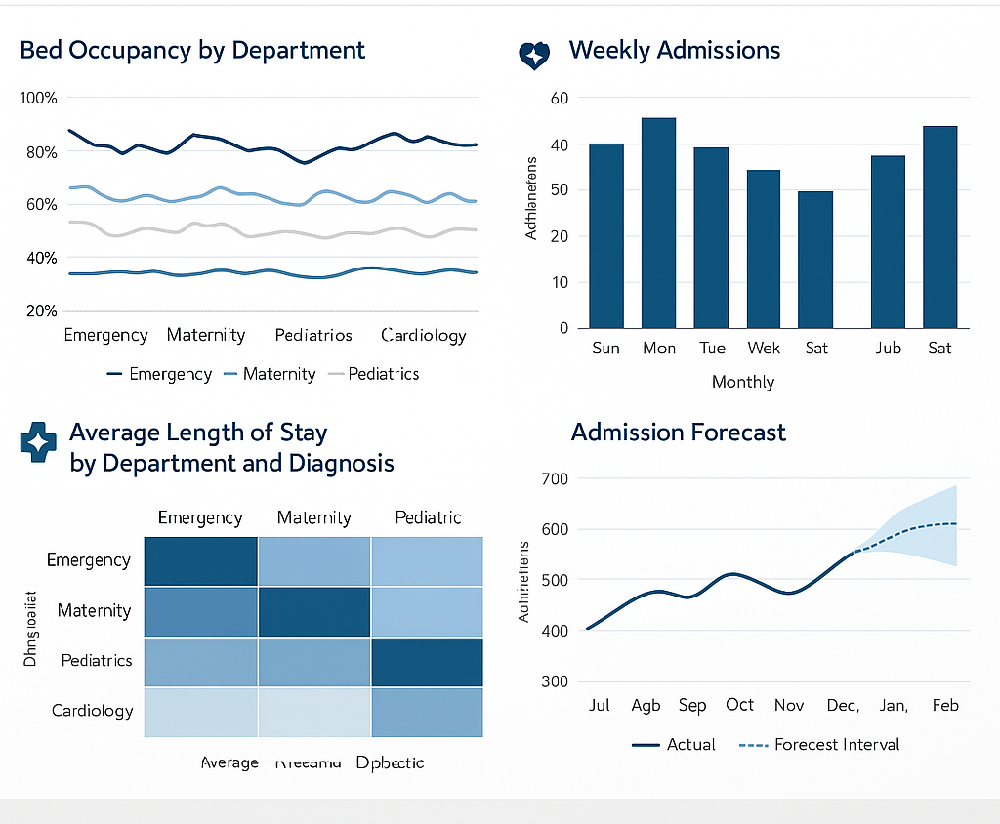

Hospital Patient Admissions and Resource Utilization Dashboard

Project Overview
This project focuses on analyzing and visualizing large-scale hospital admission data
to improve operational efficiency. By integrating SQL Server, Power BI, and Python notebooks,
the goal is to help hospital administrators monitor patient flows, predict peak periods,
and optimize resource allocation.
Data and Storage
- SQL Server database with over 5 million patient admission records.
- Tables: Admissions, Patients, Beds, Departments.
- Columns: PatientID, AdmissionDate, DischargeDate, DepartmentID, BedID, Age, Gender, DiagnosisCode.
SQL Server Queries
Wrote advanced SQL queries including:
- Aggregations: COUNT, AVG length of stay by department.
- Joins: Admissions with Patients and Beds.
- Window functions: Rolling 7-day average bed occupancy.
- Subqueries: Peak demand periods per department.
- Performance: Indexed AdmissionDate for fast filtering on millions of rows.
Notebook (ETL and Analysis)
Used a Python notebook for:
- Data cleaning and validation.
- Joining CSV extracts before loading into SQL Server.
- Exploratory data analysis (EDA) on patient demographics and seasonal trends.
Power BI Dashboard
Built an interactive dashboard with:
- Department-level bed occupancy over time.
- Weekly and monthly admission trends.
- Average length of stay by department and diagnosis.
- Forecasting peaks to aid staffing and bed planning.
Result
Delivered a production-ready dashboard that enables hospital administrators to reduce bottlenecks,
better plan staffing, and optimize bed usage during peak periods. This project demonstrates
strong SQL skills on large datasets, data engineering with notebooks, and dashboard design in Power BI.